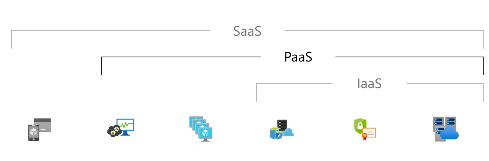

Šta je PaaS?
Platform as a service
Azure Platforma kao usluga (PaaS) predstavlja potpuno razvojno i implementaciono okruženje u oblaku, sa resursima koji vam omogućavaju da kreirate sve, od jednostavnih aplikacija zasnovanih na oblaku do inovativnih, poslovnih aplikacija koje su omogućene za rad u oblaku. Resurse koje vam je potrebno kupujete od pružaoca usluga u oblaku na principu plaćanja po potrošnji i pristupate im putem sigurne internet veze. Kao i kod Azure:IssS – a, PaaS uključuje infrastrukturu – servere, skladištenje podataka i mrežu - ali i srednje slojeve, razvojne alate, uslove poslovne inteligencije (BI), sisteme za upravljanje bazama podataka i još mnogo toga. PaaS je dizzajniran da podrži kompletan životni ciklus veb aplikacije: izgradnju, testiranje, implementaciju, upravljanje i ažuriranje. PaaS vam omogućava da izbegnete troškove ii kompleksnost kupovine i upravljanja softverskim licencama, osnovnom alikativnom infrastrukturom i srednjim slojevima, orkestratorima kontejnera poput Kubernetes – a, ili razvojnim alatima i drugim resursima. Vi upravljate aplikacijama i uslugama koje razvijate, dok obično pružalac usluga u oblaku upravlja svim ostalim stvarima
Česti slučajevi gde se Azure PaaS koristi:
Organizacije obično koriste PaaS za sledeće scenarije:
Azure PaaS pruža okvir na koji programeri mogu da se oslone kako bi razvili ili prilagodili aplikacije zasnovane na oblaku. Slično kao kada kreirate Excel makro, PaaS omogućava programerima da kreiraju aplikacije koristeći ugrađene softverske komponente. Oblačne funkcije poput skalabilnosti, visoke dostupnosti i sposobnosti za više korisnika su uključene, smanjujući količinu kodiranja koji programeri moraju obaviti.
Ali koji se pružaju kao usluga putem PaaS omogućavaju organizacijama da analiziraju i istražuju svoje podatke, pronalazeći uvide i obrasce i predviđajući ishode kako bi poboljšali prognoze, odluke o dizajnu proizvoda, povrat ulaganja i druge poslovne odluke.
Pružaoci PaaS – a, mogu ponuditi i druge usluge koje unapređuju aplikacije, poput radnog toka, direktorijuma, bezbednosti i rasporeda.
Prednosti PaaS – a
PaaS nudi iste prednosti kao i Azure:IaaS. Ali njegove dodatne funkcije - srednji slojevi, razvojni alati i drugi poslovni alati - pružaju vam još više prednosti:
Razvojni alati PaaS – a, mogu smanjivati vreme potrebno za kodiranje novih aplikacija sa unapred kodiranim komponentama aplikacija integrisanim u platformu, poput radnog toka, direktorijumskih usluga, sigurnosnih funkcija, pretrage i tako dalje.
Komponente platforme kao usluge mogu dati vašem timu za razvoj nove mogućnosti bez potrebe da dodate osoblje sa potrebnim veštinama.
Pružaoci vam daju opcije za razvoj za više platformi, kao što su računari, mobilni uređaji i pregledači, što čini razvoj aplikacije koje rade na više platformi bržim i lakšim.
Model plaćanja po upotrebi omogućava pojedincima ili organizacijama da koriste sofisticirani softver za razvoj, poslovnu inteliggenciju i analitičke alate koje inače ne bi mogli da priušte da kupe direktno.
Budući da se razvojnom okruženju pristupa preko interneta, razvojni timovi mogu zajedno raditi na projektima čak i kada si članovi tima na udaljenim lokacijama.
Azure PaaS pruža sve mogućnosti koje su vam potrebne da podržite kompletan životni ciklus veb aplikacija: izgradnju, testiranje, implementaciju, upravljanje i ažuriranje unutar istog integrisanog okruženja.